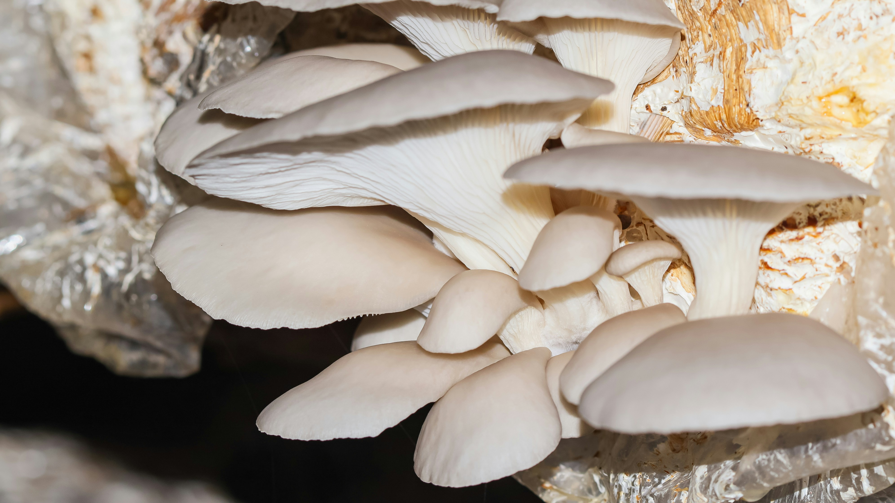

Safety First
Essential Safety Guidelines

🚫 Never Do This
- Eat any unidentified mushroom
- Forage alone in unfamiliar areas
- Touch eyes after handling fungi
- Rely solely on apps for ID Proof

⚠️ Always Verify
- Check cap, gills, stem and spore
- Cross-reference multiple guides
- Know all dangerous lookalikes
- Test small amounts spore print

✅ Best Practices
- Carry a physical field guide
- Wear gloves when handling
- Use mesh bags for spore spread
- Photograph before picking

🚑 Emergency Info
- Poison Control: 1800-116-117
- Save sample of mushroom eaten
- Seek medical help immediately
- time and amount consumed